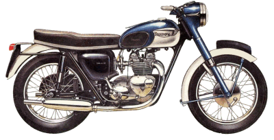
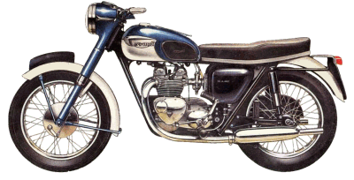

First Things to Look at
When Troubleshooting
¶ In the last month two different bikes have come in. The owners of both bikes had cleaned them up real nice and cleaned the carburetors several times. But they still wouldn't start. They were just sure the bikes had good enough compression. Both bikes had virtually NO compression!
The first thing to look at, when troubleshooting a bike that will not start, is compression. You must use a compression gauge. If the engine does not have at least 100 PSI (Pounds Per Square Inch). If the engine has low compression it will never run right. 100 PSI is right on deaths doorway. If it "seems" like it has enough or you "think" it has enough... that's not good enough. Run a compression check. If the compression is low, and the engine is a four stroke, check the valve clearances. If the valves are tight, they may be leaking compression. If the valves clearences are correct and the compresson is still low you will have to rebuild the engine.
On a two-stroke engine low compression means the rings are not sealing right. The piston may be burnt down or partially melted. Sometime an engine has had a partial sezure and pinched a ring in the piston ring groove. I once had a two-stroke engine read 90 PSI on the gauge. It would not start and it turned out that it had a pinched ring.
A pinched ring can also be caused by the crankshaft bearings starting to fail. Bits of the crankshaft bearings can come up through the ports and be caught by the piston in the port pinching the ring in it's groove. The only fix for this is a total engine rebuild.
If the engine has good compression, now check for spark. Use a new plug with the ground electrode bent out straight. The spark MUST jump a gap of AT LEAST 1/4" or more with the spark plug in the spark plug cap and grounded to the engine. If the spark won't jump a 1/4" gap outside the engine, it will not jump the spark plug's .030" gap in the engine under compression. Be Careful here. ALWAYS HAVE A FIRE EXTINGUISHER CLOSE BY. You are making a big spark and that could set something on fire!
If you don't have good spark, find out why. If you do have good spark NOW you can start looking at the carburetors. If the bike has been sitting for several months or years odds are the jets are plugged with varnish. If the engine will start and run only with the choke put on the idle jet(s) is plugged. If it will not start at all the fuel valve (Needle and Seat) may be corroded shut and/or the fuel petcock plugged. To test pull the spark plug out and put a little gasoline or staring fluid down the spark plug hole, screw in the spark plug and puton the plug cap. Now try to start the engine. The engine should start, rev up and then die. If it does this you can be reasonably certain the problem is in the carburetor or gas tank.
Don't waste your time working on a bike with no compression or spark. Check these things first and check them the right way!

 |
 |
Copyright © 1999-2004 dansmc.com. All rights reserved.